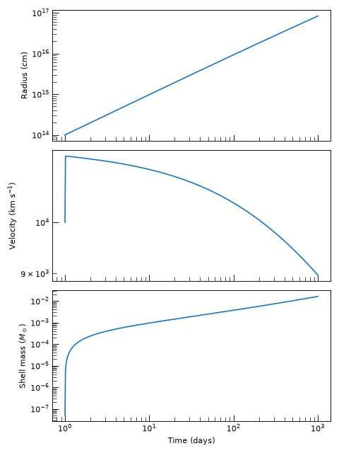
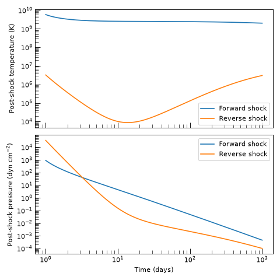
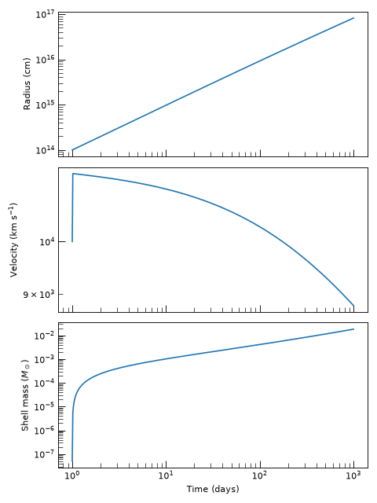

Numerical Shock Engines#
Numerical shock engines integrate the equations of motion as an ODE system and can therefore handle arbitrary ejecta and CSM density profiles, including those that transition between dynamical regimes or cannot be described by simple power laws. For an overview of all shock engines and guidance on choosing between self-similar and numerical approaches, see Shock Engines. For the theoretical derivations of the thin-shell models implemented here, see Theory: Numerical Shock Engines.
Upstream density and velocity profiles for these engines are built with the factory
functions in utils.
Non-Relativistic Numerical Shock Engines#
Three fully implemented non-relativistic engines are available, covering the most common levels of physical detail needed for radio-transient modeling. The table below summarises their applicability and trade-offs.
Engine |
Best For |
|---|---|
Late-time radiative snowplow phases where post-shock pressure is negligible and total shell momentum is conserved. Lightest computational cost. |
|
Problems where only the shell kinematics matter and no separate energy budget for each shocked layer is needed. Fastest adiabatic numerical engine. |
|
Problems requiring separate forward and reverse shock tracking, independent internal energies, or optional radiative cooling in each layer. |
Pressure-Driven Thin-Shell Shock Engine#
The PressureDrivenThinShellShockEngine
collapses the shocked interaction region to a single thin shell of mass
\(M_{\rm sh}\), radius \(R_{\rm sh}\), and velocity \(v_{\rm sh}\). The
shell acceleration is driven by the net post-shock pressure difference estimated from the
instantaneous Rankine–Hugoniot jump conditions, without tracking a separate thermal
energy budget. It is the simplest numerical engine and is well-suited to problems where
the detailed energy evolution of the shocked layers is not needed. For the theoretical
derivation see Pressure-Driven Thin-Shell Model.
The engine integrates the 3-component state vector
governed by
where \(\Delta \equiv u_1(R_{\rm sh},t) - v_{\rm sh}\) is the ejecta–shell velocity lag and \(\chi = (\hat{\gamma}+1)/(\hat{\gamma}-1)\) is the strong-shock compression ratio.
Hint
When the distinction between the forward and reverse shock matters, for example,
when separate post-shock temperatures or independent radiative losses in each layer
are needed, use the
MechanicalShockEngine instead.
Problem Setup#
All numerical shock engines require four upstream source callables that describe the density and bulk velocity just outside each shock face:
\(\rho_1(r,t)\) — ejecta density ahead of the reverse shock.
\(u_1(r,t)\) — ejecta velocity ahead of the reverse shock.
\(\rho_4(r,t)\) — CSM density ahead of the forward shock.
\(u_4(r,t)\) — CSM velocity ahead of the forward shock.
Hint
For the common case of homologous ejecta in a stationary CSM (the standard
assumption for young supernova ejecta) all four callables can be assembled from
ejecta and CSM density callables using
make_homologous_stationary_sources(). Under
this approximation the homologous ejecta density follows
while the CSM is stationary, \(u_4 = 0\). See
profiles for the full catalogue of available ejecta
and CSM profile classes.
Example — profile and engine setup
from astropy import units as u
from trilobite.dynamics.profiles import BrokenPowerLawEjectaProfile, WindCSMProfile
from trilobite.dynamics.shocks import (
PressureDrivenThinShellShockEngine,
make_homologous_stationary_sources,
)
# Chevalier broken-power-law ejecta, normalized to E_ej and M_ej
K, v_t = BrokenPowerLawEjectaProfile.normalize(
E_ej=1e51 * u.erg,
M_ej=5.0 * u.Msun,
n=10.0,
delta=1.0,
)
rho_ej = BrokenPowerLawEjectaProfile.as_optimized_callable(K=K, v_t=v_t, n=10.0, delta=1.0)
# Steady wind CSM: rho(r) = A * r^-2, A = Mdot / (4 pi v_w)
rho_csm = WindCSMProfile.as_optimized_callable(
mass_loss_rate=1e-5 * u.Msun / u.yr,
wind_velocity=100.0 * u.km / u.s,
)
# Assemble the four two-argument (r, t) source callables
rho_1, u_1, rho_4, u_4 = make_homologous_stationary_sources(rho_ej, rho_csm)
# The engine is stateless — a single instance can be reused
engine = PressureDrivenThinShellShockEngine()
Solving The Shock Properties#
Call
compute_shock_properties()
with a time array, the four source callables, and initial conditions for the shell
radius \(R_0\), velocity \(v_0\), mass \(M_0\), and start time \(t_0\).
The method returns a
ThinShellShockState named tuple with
seven Quantity fields:
Returned Shock Properties
Key |
Description |
|---|---|
|
Shell radius \(R_{\rm sh}(t)\). |
|
Shell velocity \(v_{\rm sh}(t)\). |
|
Accumulated shell mass \(M_{\rm sh}(t)\). |
|
Immediate post-shock density \(\rho_s\) at the forward shock, computed from the strong cold-shock Rankine–Hugoniot relation applied to the upstream CSM density \(\rho_4(R_{\rm sh}, t)\). |
|
Immediate post-shock pressure \(p_s\) at the forward shock. |
|
Immediate post-shock temperature \(T_s\) at the forward shock, computed using the
mean molecular weight |
|
Post-shock thermal energy density \(e_{\rm th} = p_s/(\gamma - 1)\) at the forward shock. |
The four post-shock thermodynamic fields are evaluated at every output time step using
StrongColdShockConditions
with the shell velocity \(v_{\rm sh}\) as the shock velocity and
\(\rho_4(R_{\rm sh},t)\), \(u_4(R_{\rm sh},t)\) as the upstream CSM
conditions. The mean molecular weight mu can be changed at instantiation, e.g.
PressureDrivenThinShellShockEngine(mu=0.62) for a solar-composition plasma.
Note
The ODE integrator used internally is scipy.integrate.solve_ivp() with
method='Radau' and rtol=1e-10 by default. Any extra keyword arguments
passed to
compute_shock_properties()
are forwarded directly to
solve_ivp(), making it straightforward to tighten tolerances
or switch integration methods for stiff problems.
Example — radius, velocity, and swept-up mass
import numpy as np
import matplotlib.pyplot as plt
from astropy import units as u
from trilobite.dynamics.profiles import BrokenPowerLawEjectaProfile, WindCSMProfile
from trilobite.dynamics.shocks import (
PressureDrivenThinShellShockEngine,
make_homologous_stationary_sources,
)
from trilobite.utils.plot_utils import set_plot_style
K, v_t = BrokenPowerLawEjectaProfile.normalize(1e51 * u.erg, 5.0 * u.Msun, n=10.0, delta=1.0)
rho_ej = BrokenPowerLawEjectaProfile.as_optimized_callable(K=K, v_t=v_t, n=10.0, delta=1.0)
rho_csm = WindCSMProfile.as_optimized_callable(mass_loss_rate=1e-5 * u.Msun / u.yr, wind_velocity=100.0 * u.km / u.s)
rho_1, u_1, rho_4, u_4 = make_homologous_stationary_sources(rho_ej, rho_csm)
engine = PressureDrivenThinShellShockEngine()
time = np.geomspace(1, 1000, 500) * u.day
state = engine.compute_shock_properties(
time=time,
rho_1=rho_1, rho_4=rho_4,
u_1=u_1, u_4=u_4,
R_0=1e14 * u.cm,
v_0=1e9 * u.cm / u.s,
M_0=1e26 * u.g,
t_0=1.0 * u.day,
)
set_plot_style()
fig, axes = plt.subplots(3, 1, figsize=(6, 8), sharex=True)
t_days = time.to_value(u.day)
axes[0].loglog(t_days, state.radius.to_value(u.cm))
axes[0].set_ylabel("Radius (cm)")
axes[1].loglog(t_days, state.velocity.to_value(u.km / u.s))
axes[1].set_ylabel(r"Velocity (km s$^{-1}$)")
axes[2].loglog(t_days, state.mass.to_value(u.Msun))
axes[2].set_xlabel("Time (days)")
axes[2].set_ylabel(r"Shell mass ($M_\odot$)")
plt.tight_layout()
plt.show()
(Source code, png, hires.png, pdf)
{kind=link}
{kind=link}

Mechanical Shock Engine#
The MechanicalShockEngine implements the
non-relativistic form of the mechanical shock model of
Beloborodov and Uhm[1], following the simplifications
described in Wang et al.[2]. It
self-consistently evolves separate internal energies for the shocked ejecta (Region
2, between the reverse shock and the contact discontinuity) and the shocked CSM (Region
3, between the contact discontinuity and the forward shock), tracking shock heating,
adiabatic expansion losses, and an optional radiative cooling term.
The engine integrates an 8-component state vector
where \(R_{\rm cd}\) and \(v_{\rm cd}\) are the contact-discontinuity radius and velocity, \(M_i\) and \(U_i\) are the mass and internal energy of each shocked layer, and \(\Delta_i\) are the effective layer widths. Internally the code evolves \(\Phi = v_{\rm cd}^2\) rather than \(v_{\rm cd}\) to avoid a stiff source term; \(v_{\rm cd}\) is recovered as \(\sqrt{\Phi}\) at each output step.
The contact-discontinuity velocity is governed by global energy conservation for the shocked region. Denoting the kinetic-energy flux advected into the shocked layers by the upstream material as
the governing equation for \(\Phi = v_{\rm cd}^2\) is
Radiative losses do not appear directly in this equation; they reduce the layer internal energies \(U_i\) and therefore the layer pressures, but their energy comes from the internal budget — not the kinetic budget — so they cancel in the total energy balance.
The shock faces sit at \(R_{\rm rs} = R_{\rm cd} - \Delta_2\) and \(R_{\rm fs} = R_{\rm cd} + \Delta_3\). The two shocked layers use different width closures. The forward-shocked CSM layer expands at its internal sound speed,
The reverse-shocked ejecta layer grows at the rate newly compressed ejecta is deposited behind the shock. In the thin-shell limit (\(R_{\rm rs}\simeq R_{\rm cd}\)) the general mass-deposition closure reduces to
where \(\chi_2 = (\gamma_2+1)/(\gamma_2-1)\) is the strong-shock compression ratio. For the full derivation of both closures see Mechanical Internal-Energy Model.
Hint
For most supernova modeling the
PressureDrivenThinShellShockEngine
is faster and requires fewer setup steps. Use the mechanical engine when you need
the forward and reverse shock velocities separately, distinct post-shock temperatures
in each layer, or independent radiative cooling terms.
Problem Setup#
The profile and source-function setup is identical to the pressure-driven thin-shell
engine: build a ejecta density callable with
BrokenPowerLawEjectaProfile (or
ExponentialEjectaProfile), build a CSM
density callable with one of the profile classes in profiles,
and assemble the four source callables with
make_homologous_stationary_sources().
The additional step specific to this engine is deriving self-consistent initial
conditions for all eight state components.
infer_initial_conditions()
computes \((M_{2,0},\,M_{3,0},\,U_{2,0},\,U_{3,0},\,\Delta_{2,0},\,\Delta_{3,0})\)
from the initial contact-discontinuity position \(R_{{\rm cd},0}\), velocity
\(v_{{\rm cd},0}\), and start time \(t_0\). Swept-up masses are obtained by
integrating the upstream density profiles at \(t_0\), and initial internal energies
are set by the Rankine–Hugoniot specific energy for each shock face. Skipping this
step and setting the eight components by hand typically introduces a sharp artificial
transient at the first ODE step.
Example — profile and initial-condition setup
from astropy import units as u
from trilobite.dynamics.shocks import MechanicalShockEngine, make_homologous_stationary_sources
from trilobite.dynamics.profiles import BrokenPowerLawEjectaProfile, WindCSMProfile
# Ejecta kernel: Chevalier broken power law
K, v_t = BrokenPowerLawEjectaProfile.normalize(
E_ej=1e51 * u.erg,
M_ej=5.0 * u.Msun,
n=10.0,
delta=1.0,
)
G_ej = BrokenPowerLawEjectaProfile.as_optimized_callable(n=10.0, delta=1.0, K=K, v_t=v_t)
# CSM: steady red-supergiant wind
rho_csm = WindCSMProfile.as_optimized_callable(
mass_loss_rate=1e-5 * u.Msun / u.yr,
wind_velocity=100.0 * u.km / u.s,
)
# Assemble the four two-argument source callables
rho_1, u_1, rho_4, u_4 = make_homologous_stationary_sources(
rho_ej=G_ej,
rho_csm=rho_csm,
)
# The engine holds gamma_2, gamma_3, mu_2, mu_3 — create it first.
engine = MechanicalShockEngine()
# Derive a self-consistent 8-component initial condition vector
t_0 = 1.0 * u.day
ic = engine.infer_initial_conditions(
R_cd_0=1e14 * u.cm,
v_cd_0=1e9 * u.cm / u.s,
t_0=t_0,
rho_1=rho_1, rho_4=rho_4,
u_1=u_1, u_4=u_4,
)
Solving The Shock Properties#
Call
compute_shock_properties()
with a time array, the four source callables, and the 8-component initial condition
vector. The method returns a
MechanicalShockState named tuple with
thirty-two Quantity fields:
Returned Mechanical Shock Properties
The mechanical shock state contains both the evolved ODE variables and a set of derived shock diagnostics. Region 2 denotes shocked ejecta, while Region 3 denotes shocked CSM.
Evolved ODE state
These eight quantities are the direct output of the ODE integrator (note that \(v_{\rm cd}\) is reconstructed from the internally evolved \(\Phi = v_{\rm cd}^2\)).
Key |
Description |
|---|---|
|
Contact-discontinuity radius \(R_{\rm cd}(t)\). |
|
Contact-discontinuity velocity \(v_{\rm cd}(t)\). |
|
Swept-up shocked-ejecta mass \(M_2\). |
|
Swept-up shocked-CSM mass \(M_3\). |
|
Shocked-ejecta internal energy \(U_2\). |
|
Shocked-CSM internal energy \(U_3\). |
|
Effective shocked-ejecta layer width \(\Delta_2\). |
|
Effective shocked-CSM layer width \(\Delta_3\). |
Region-averaged layer thermodynamics
These twelve quantities describe the bulk thermodynamic state of each shocked layer, derived from the evolved masses, energies, and effective volumes.
Key |
Description |
|---|---|
|
Effective shocked-ejecta volume \(V_2 \simeq 4\pi R_{\rm cd}^2\Delta_2\). |
|
Effective shocked-CSM volume \(V_3 \simeq 4\pi R_{\rm cd}^2\Delta_3\). |
|
Layer-averaged shocked-ejecta density \(\bar{\rho}_2 = M_2/V_2\). |
|
Layer-averaged shocked-CSM density \(\bar{\rho}_3 = M_3/V_3\). |
|
Layer-averaged shocked-ejecta pressure \(P_2 = (\gamma_2-1)U_2/V_2\). |
|
Layer-averaged shocked-CSM pressure \(P_3 = (\gamma_3-1)U_3/V_3\). |
|
Layer-averaged shocked-ejecta temperature \(T_2 = \mu_2 m_p P_2 / (k_B \bar{\rho}_2)\). |
|
Layer-averaged shocked-CSM temperature \(T_3 = \mu_3 m_p P_3 / (k_B \bar{\rho}_3)\). |
|
Layer-averaged thermal energy density of shocked ejecta, \(e_2 = U_2/V_2\). |
|
Layer-averaged thermal energy density of shocked CSM, \(e_3 = U_3/V_3\). |
|
Effective sound speed in the shocked ejecta, \(c_{s,2} = \sqrt{\gamma_2(\gamma_2-1)U_2/M_2}\). |
|
Effective sound speed in the shocked CSM, \(c_{s,3} = \sqrt{\gamma_3(\gamma_3-1)U_3/M_3}\). |
Important
The pressure_*, temperature_*, and density_* fields are
layer-averaged quantities determined by the internal-energy budget of
each shocked layer. They are not instantaneous Rankine–Hugoniot
post-shock values; those are in the post_shock_* groups below.
Shock geometry
These quantities locate the reverse and forward shocks implied by the evolved
contact radius and layer widths. After ejecta crossing radius_rs is reported
as zero and velocity_rs as NaN.
Key |
Description |
|---|---|
|
Reverse-shock radius \(R_{\rm rs} = R_{\rm cd} - \Delta_2\). Zero after ejecta crossing. |
|
Forward-shock radius \(R_{\rm fs} = R_{\rm cd} + \Delta_3\). |
|
Reverse-shock speed \(D_{\rm rs}\). |
|
Forward-shock speed \(D_{\rm fs}\). |
Forward-shock instantaneous jump diagnostics
These four quantities are the immediate post-shock state at the forward-shock face,
computed from the Rankine–Hugoniot jump conditions at each output time step.
Set to NaN when the forward shock is inactive (\(D_{\rm fs} \le u_4\)).
Key |
Description |
|---|---|
|
Immediate post-shock density \(\rho_{s,3}\), computed from the strong cold-shock Rankine–Hugoniot relation applied to the upstream CSM density \(\rho_4(R_{\rm fs}, t)\). |
|
Immediate post-shock pressure \(p_{s,3}\). |
|
Immediate post-shock temperature \(T_{s,3}\), computed using mean molecular
weight |
|
Post-shock thermal energy density \(e_{\rm th,3} = p_{s,3}/(\gamma_3 - 1)\). |
Reverse-shock instantaneous jump diagnostics
These four quantities are the immediate post-shock state at the reverse-shock face,
computed from the Rankine–Hugoniot jump conditions at each output time step.
Set to NaN when the reverse shock is inactive (after ejecta crossing, or when
\(u_1(R_{\rm rs}, t) \le v_{\rm cd}\)).
Key |
Description |
|---|---|
|
Immediate post-shock density \(\rho_{s,2}\), computed from the strong cold-shock Rankine–Hugoniot relation applied to the upstream ejecta density \(\rho_1(R_{\rm rs}, t)\). |
|
Immediate post-shock pressure \(p_{s,2}\). |
|
Immediate post-shock temperature \(T_{s,2}\), computed using mean molecular
weight |
|
Post-shock thermal energy density \(e_{\rm th,2} = p_{s,2}/(\gamma_2 - 1)\). |
The eight instantaneous Rankine–Hugoniot jump diagnostics (post_shock_* fields)
are evaluated using
StrongColdShockConditions.
The forward-shock call uses \(D_{\rm fs}\) as the shock velocity with upstream
conditions \((\rho_4,u_4)\) evaluated at \(R_{\rm fs}\); the reverse-shock
call uses \(D_{\rm rs}\) with upstream conditions \((\rho_1,u_1)\) evaluated
at \(R_{\rm rs}\). These fields are set to NaN when the corresponding shock
is inactive. Mean molecular weights mu_2 and mu_3 are set at engine
instantiation, e.g. MechanicalShockEngine(mu_2=0.62, mu_3=0.5).
Optional radiative cooling in each layer is enabled by passing cooling_2 and
cooling_3 callables of the signature
cooling(R_cd, v_cd, M, U, Delta, t) -> dU/dt (negative for energy loss) to
compute_shock_properties().
Ejecta Crossing and Finite Ejecta Mass#
Passing M1_total to
compute_shock_properties()
enables tracking of ejecta crossing. When the swept-up ejecta mass \(M_2\) reaches
\((1 - 10^{-4})\,M_{\rm ej}\), three things happen simultaneously:
Mass loading quenched: \(\dot{M}_2 = 0\).
Shock heating quenched: \(\dot{U}_{{\rm sh},2} = 0\).
Width closure switched: \(\dot{\Delta}_2\) changes from the velocity-ratio form to \(v_{\rm cd}\), so Region 2 continues to expand adiabatically consistent with the Region-3 treatment.
After crossing, radius_rs is reported as zero and velocity_rs as NaN. The
ODE integration is split into two phases at the exact crossing time — detected by an
event function — so that Radau can restart cleanly across the right-hand-side
discontinuity without unnecessary step-size reduction.
Use the classmethod
find_ejecta_crossing_time()
to recover the crossing time from an already-computed state:
t_cross = MechanicalShockEngine.find_ejecta_crossing_time(
time=time,
state=state,
M1_total=5.0 * u.Msun,
)
If \(M_2\) never reaches the threshold within the supplied time grid, the method
returns None.
Example — forward and reverse shock temperatures
import numpy as np
import matplotlib.pyplot as plt
from astropy import units as u
from trilobite.dynamics.shocks import MechanicalShockEngine, make_homologous_stationary_sources
from trilobite.dynamics.profiles import BrokenPowerLawEjectaProfile, WindCSMProfile
from trilobite.utils.plot_utils import set_plot_style
K, v_t = BrokenPowerLawEjectaProfile.normalize(1e51 * u.erg, 5.0 * u.Msun, n=10.0, delta=1.0)
G_ej = BrokenPowerLawEjectaProfile.as_optimized_callable(n=10.0, delta=1.0, K=K, v_t=v_t)
rho_csm = WindCSMProfile.as_optimized_callable(mass_loss_rate=1e-5 * u.Msun / u.yr, wind_velocity=100.0 * u.km / u.s)
rho_1, u_1, rho_4, u_4 = make_homologous_stationary_sources(G_ej, rho_csm)
engine = MechanicalShockEngine()
t_0 = 1.0 * u.day
ic = engine.infer_initial_conditions(
R_cd_0=1e14 * u.cm, v_cd_0=1e9 * u.cm / u.s,
t_0=t_0, rho_1=rho_1, rho_4=rho_4, u_1=u_1, u_4=u_4,
)
time = np.geomspace(1, 1000, 300) * u.day
state = engine.compute_shock_properties(
time=time,
rho_1=rho_1, rho_4=rho_4, u_1=u_1, u_4=u_4,
initial_conditions=ic, t_0=t_0,
)
set_plot_style()
fig, axes = plt.subplots(2, 1, figsize=(6, 6), sharex=True)
t_days = time.to_value(u.day)
axes[0].loglog(t_days, state.post_shock_temperature_fs.to_value(u.K), label="Forward shock")
axes[0].loglog(t_days, state.post_shock_temperature_rs.to_value(u.K), label="Reverse shock")
axes[0].set_ylabel("Post-shock temperature (K)")
axes[0].legend()
axes[1].loglog(t_days, state.post_shock_pressure_fs.to_value(u.dyn / u.cm**2), label="Forward shock")
axes[1].loglog(t_days, state.post_shock_pressure_rs.to_value(u.dyn / u.cm**2), label="Reverse shock")
axes[1].set_ylabel(r"Post-shock pressure (dyn cm$^{-2}$)")
axes[1].set_xlabel("Time (days)")
axes[1].legend()
plt.tight_layout()
plt.show()
(Source code, png, hires.png, pdf)
{kind=link}
{kind=link}

Momentum-Conserving (Snowplow) Shock Engine#
The MomentumConservingShockEngine
implements the non-relativistic momentum-conserving (snowplow) thin-shell closure.
Post-shock pressure is neglected and shell acceleration is driven solely by the momentum
flux deposited by swept-up material from both the ejecta side and the CSM side. This is
the appropriate limit once the shocked gas has radiated away most of its internal energy,
so that the shell behaves as a cold, momentum-conserving snowplow. For the theoretical
derivation see Momentum-Conserving Snowplow.
The engine integrates the 3-component state vector
governed by
where
are the ejecta and CSM mass-loading rates, clamped to be non-negative. The initial momentum is set to \(\Pi_0 = M_0\,v_0\).
Post-shock thermodynamics at the forward shock are derived as a diagnostic from the instantaneous strong cold-shock Rankine–Hugoniot conditions; they do not feed back into the ODE.
Hint
Because pressure is neglected, the snowplow engine produces a different late-time
asymptote than the adiabatic engines. For uniform CSM it converges to
\(R \propto t^{1/4}\) (snowplow scaling), whereas the
PressureDrivenThinShellShockEngine
converges to \(R \propto t^{4/13}\) and the full Sedov-Taylor solution gives
\(R \propto t^{2/5}\). Use this engine when the shocked gas is strongly cooled
and pressure support is unimportant.
Problem Setup#
The profile and source-function setup is identical to the pressure-driven thin-shell
engine: build the ejecta and CSM density callables from the profile classes in
profiles and assemble the four two-argument source functions
with make_homologous_stationary_sources().
Example — profile and engine setup
from astropy import units as u
from trilobite.dynamics.profiles import BrokenPowerLawEjectaProfile, WindCSMProfile
from trilobite.dynamics.shocks import (
MomentumConservingShockEngine,
make_homologous_stationary_sources,
)
# Broken-power-law ejecta, normalized to E_ej and M_ej
K, v_t = BrokenPowerLawEjectaProfile.normalize(
E_ej=1e51 * u.erg,
M_ej=5.0 * u.Msun,
n=10.0,
delta=1.0,
)
rho_ej = BrokenPowerLawEjectaProfile.as_optimized_callable(K=K, v_t=v_t, n=10.0, delta=1.0)
# Steady wind CSM: rho(r) = A * r^-2
rho_csm = WindCSMProfile.as_optimized_callable(
mass_loss_rate=1e-5 * u.Msun / u.yr,
wind_velocity=100.0 * u.km / u.s,
)
# Assemble the four two-argument (r, t) source callables
rho_1, u_1, rho_4, u_4 = make_homologous_stationary_sources(rho_ej, rho_csm)
# The engine is stateless — a single instance can be reused
engine = MomentumConservingShockEngine()
Solving The Shock Properties#
Call
compute_shock_properties()
with a time array, the four source callables, and initial conditions for the shell
radius \(R_0\), velocity \(v_0\), mass \(M_0\), and start time \(t_0\).
The method returns a
MomentumConservingShockState named tuple
with seven Quantity fields:
Returned Shock Properties
Key |
Description |
|---|---|
|
Shell radius \(R_{\rm sh}(t)\). |
|
Shell velocity \(v_{\rm sh}(t) = \Pi_{\rm sh}/M_{\rm sh}\). |
|
Accumulated shell mass \(M_{\rm sh}(t)\). |
|
Immediate post-shock density \(\rho_s\) at the forward shock, computed from the strong cold-shock Rankine–Hugoniot relation applied to the upstream CSM density \(\rho_4(R_{\rm sh}, t)\). |
|
Immediate post-shock pressure \(p_s\) at the forward shock. |
|
Immediate post-shock temperature \(T_s\) at the forward shock, computed using the
mean molecular weight |
|
Post-shock thermal energy density \(e_{\rm th} = p_s/(\gamma - 1)\) at the forward shock. |
The four post-shock thermodynamic fields are evaluated at every output time step using
StrongColdShockConditions
with \(v_{\rm sh}\) as the shock velocity and
\(\rho_4(R_{\rm sh},t)\), \(u_4(R_{\rm sh},t)\) as the upstream CSM conditions.
The mean molecular weight mu can be changed at instantiation, e.g.
MomentumConservingShockEngine(mu=0.62) for a solar-composition plasma.
Note
The ODE integrator used internally is scipy.integrate.solve_ivp() with
method='Radau' and rtol=1e-10 by default. Any extra keyword arguments
passed to
compute_shock_properties()
are forwarded directly to solve_ivp().
Example — radius, velocity, and swept-up mass
import numpy as np
import matplotlib.pyplot as plt
from astropy import units as u
from trilobite.dynamics.profiles import BrokenPowerLawEjectaProfile, WindCSMProfile
from trilobite.dynamics.shocks import (
MomentumConservingShockEngine,
make_homologous_stationary_sources,
)
from trilobite.utils.plot_utils import set_plot_style
K, v_t = BrokenPowerLawEjectaProfile.normalize(1e51 * u.erg, 5.0 * u.Msun, n=10.0, delta=1.0)
rho_ej = BrokenPowerLawEjectaProfile.as_optimized_callable(K=K, v_t=v_t, n=10.0, delta=1.0)
rho_csm = WindCSMProfile.as_optimized_callable(mass_loss_rate=1e-5 * u.Msun / u.yr, wind_velocity=100.0 * u.km / u.s)
rho_1, u_1, rho_4, u_4 = make_homologous_stationary_sources(rho_ej, rho_csm)
engine = MomentumConservingShockEngine()
time = np.geomspace(1, 1000, 500) * u.day
state = engine.compute_shock_properties(
time=time,
rho_1=rho_1, rho_4=rho_4,
u_1=u_1, u_4=u_4,
R_0=1e14 * u.cm,
v_0=1e9 * u.cm / u.s,
M_0=1e26 * u.g,
t_0=1.0 * u.day,
)
set_plot_style()
fig, axes = plt.subplots(3, 1, figsize=(6, 8), sharex=True)
t_days = time.to_value(u.day)
axes[0].loglog(t_days, state.radius.to_value(u.cm))
axes[0].set_ylabel("Radius (cm)")
axes[1].loglog(t_days, state.velocity.to_value(u.km / u.s))
axes[1].set_ylabel(r"Velocity (km s$^{-1}$)")
axes[2].loglog(t_days, state.mass.to_value(u.Msun))
axes[2].set_xlabel("Time (days)")
axes[2].set_ylabel(r"Shell mass ($M_\odot$)")
plt.tight_layout()
plt.show()
(Source code, png, hires.png, pdf)
{kind=link}
{kind=link}

Relativistic Numerical Shock Engines#
Relativistic extensions of all three non-relativistic closures are planned. These will
be necessary for modeling ultra-relativistic outflows such as GRB jets and
mildly-relativistic TDE-driven shocks, where Lorentz factors \(\Gamma \gtrsim 1\)
must be tracked self-consistently. The class objects exist in
numerical but raise NotImplementedError if
called.
Relativistic Pressure-Driven Thin-Shell Engine#
The RelPressureDrivenThinShellShockEngine
will extend the pressure-driven thin-shell formulation to the relativistic regime.
Not yet implemented — planned for a future release.
Relativistic Mechanical Shock Engine#
The RelMechanicalShockEngine will
implement the full relativistic mechanical model of
Beloborodov and Uhm[1].
Not yet implemented — planned for a future release.
Relativistic Momentum-Conserving Shock Engine#
The RelMomentumConservingShockEngine will
implement a relativistic momentum-conserving shock engine.
Not yet implemented — planned for a future release.